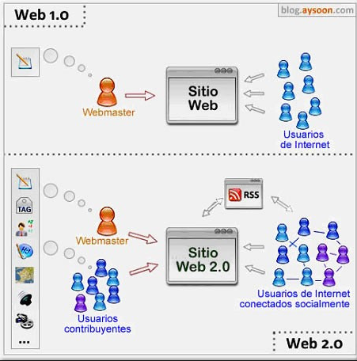

Web 2.0
|
El concepto de web 2.0 fue acuñado en los años 2003-2004, como forma de hacer referencia a algunas innovaciones importantes que habían surgido en Internet en los últimos años. El término web 2.0 se utiliza para referirse a una nueva generación de sitios web que se permiten a las personas colaborar y compartir información online de formas que antes no eran posibles. Con la web 1.0, la mayoría de los sitios web consistían en páginas HTML estáticas. Más adelante, los desarrolladores comenzaron a crear páginas web de forma dinámica pensadas para actualizarse con frecuencia y permitir la interacción de los usuarios. Con la web 2.0 las páginas web no son solo dinámicas sino también altamente interactivas. Gracias a la web 2.0 los internautas se han convertido en participantes de la red, dejando atrás su papel de meros espectadores. Redes sociales, foros o sección de comentarios en blogs son tres formas a través de las cuáles los usuarios pueden interaccionar con un sitio web. |
 |
| Inicio | Índice | Subíndice |